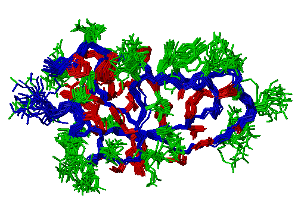
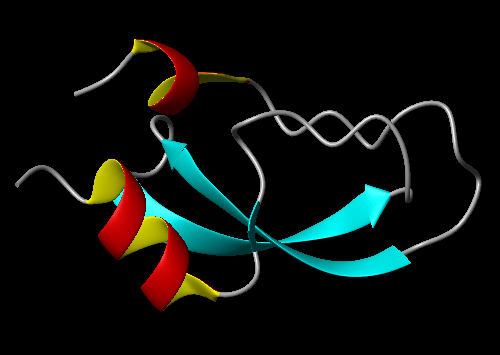
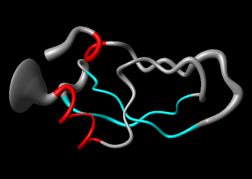

1. Introduction
MOLMOL is a molecular graphics program for displaying, analyzing,
and manipulating the three-dimensional structure of molecules,
with special emphasis on biological macromolecules. The program has
features that make it particularly useful for the study of protein
or DNA structures determined by NMR, but most of its possibilities
are useful also outside of this particular area.
MOLMOL runs on UNIX and Windows NT/95/98 and is freely available.
Copyright conditions are included in the distribution, all users
are required to carefully read and follow them.
The latest information about the program is always available on the
MOLMOL Web Site. Links and instructions for downloading and
installing the software can also be found there.
Questions and problem reports should normally be sent to the
MOLMOL mailing list, subscription information and archives
are available on the web site. Since the author has moved to
a new job, mail sent to the address on the title page may not
be answered.
2. Documentation Overview
This manual gives an introduction into using MOLMOL, and
explains the basic concepts. The user is encouraged to use the
online help system of the program. A
list of commands can be found towards the
end of this manual, the tables in that section contain links
to the online help pages.
Users who prefer to learn from tutorials may want to skip
to the tutorial section before reading
through the complete manual. Even after completing the tutorials
successfully, it is still recommended to come back to the
remaining parts of the manual later, a good understanding of
of the basic concepts will help you to use MOLMOL more
efficiently.
The collection of online manual pages is also available as
a PostScript file named ref.ps in the man
subdirectory of the installation directory. All other
documentation is distributed in HTML format only. For easier
printing of the manual, it is available as
one single file as well as as
set of separate files. The contents
of the two forms is identical.
3. Starting
UNIX
MOLMOL is supplied with a shell script (molmol in
the top level installation directory) that processes options
and arguments and sets the necessary environment variables.
The following options are recognized by this shell script:
| argument |
description |
|---|
| -h |
give list of options |
| -t |
TTY interface (no graphics) |
| -o name |
alternate input/output device |
| -2 |
stereo mode (OpenGL only) |
| -a |
display all atoms (not backbone only) |
| -s |
superimpose complete backbone |
| -r range |
superimpose given backbone range |
| -f file |
execute macro file (- for standard input) |
| files |
DG, PDB, Angle or Dump files |
If the program is started without names of structure files, it
will recover the saved state of the last invocation (if available)
and ignore all options but -f macro.
Besides the listed options, the program will also recognize
standard Xt options, like -bg color for setting the
background color.
Windows
Under Windows, you will normally start MOLMOL by double-clicking
its icon (a capital M in cyan and red). You may want to create a
shortcut on your desktop. Right-click on the icon e. g. in
Windows Explorer, select "Create Shortcut" in the menu, and drag
the shortcut to a convenient location on your desktop.
The following command line options are recognized:
| argument |
description |
|---|
| -stereo |
stereo mode |
| file |
execute macro file |
If you want to use one of these options, you can either start
the executable from a command prompt, or define a shortcut,
and then set the argument in the properties of the shortcut
(right click on icon, select "Properties", click on "Shortcut"
tab, and add the argument after the executable in the "Target:"
field).
You can also start MOLMOL by defining it as program to be started
for files with a certain exptension (like .pdb), and
then double-clicking a file with this extension.
MOLMOL also supports drag and drop for some common molecule
file types. If a file with one of the following extensions is
dropped into the main window of the running program, the file
is loaded with the corresponding command:
4. User Interface
This section describes how to use the most important parts
of the MOLMOL user interface. We assume that you are familiar
with the basic concepts of using applications with graphical
user interfaces. Here you will learn about:
Main Window Elements
The following image shows a screen dump of the MOLMOL main
window, with annotations for its elements. Each of them
will be briefly explained in the following sections.
 When you start up MOLMOL for the first time, you will see
two dialogs boxes in addition to the main window. If you
prefer not to see them each time you start the program,
you can disable them using the UserInterface
command, and choose the option to save the program state
when you quit the program. You can do the same if you
do not want certain parts of the main window to appear.
When you start up MOLMOL for the first time, you will see
two dialogs boxes in addition to the main window. If you
prefer not to see them each time you start the program,
you can disable them using the UserInterface
command, and choose the option to save the program state
when you quit the program. You can do the same if you
do not want certain parts of the main window to appear.
Drawing Area
All graphical display of molecules (and other items)
will appear here. You also use this area for interactive
mouse manipulations, like zooming and
rotating.
Menu
The menu contains all MOLMOL commands, you use the common
navigation methods known from other programs to access
commands in the menu. The following is a short overview of
which kinds of commands can be found in which pulldown menu:
- File
- Input and output of files. This includes reading and
writing of molecules in many formats, output of plots,
execution of macros, and a variety of other commands.
- Edit
- Commands that modify molecules. This includes
commands that change the covalent structure (adding
and removing atoms and bonds, building molecules
from residues, etc.) and commands that modify
coordinates (rotation, translation, changing dihedral
angles, superposition, etc.).
- View
- Commands that change global viewing parameters.
This includes zooming, camera and light source
parameters, clipping planes and fog.
- Options
- Commands that change various kinds of configuration
options and preferences. This includes the choice
whether certain dialogs are displayed, selection of
stereo and animation modes, rendering options,
display quality, plot parameters, and path names of
configuration files.
- Prop
- Commands that change or list properties. Properties
are boolean values that can be set for various data
items, they are mainly used for
Selection.
- Attr
- Commands that change graphics attributes, like
colors, display styles, material properties, etc.
- Calc
- Commands that perform calculations. A large
variety of calculation and analysis possibilites
for molecules can be found here.
- Prim
- Commands that create and modify primitives.
Primitives are things that can be displayed, but
are not molecules. This includes annotations,
schematic displays (ribbons) and surfaces.
- Fig
- Commands that draw figures used for the analysis
of molecules. This includes Ramachandran plots,
angle distribution plots, contact maps, etc.
- Opt
- This menu appears when optional commands are defined
as part of the startup macros, and those commands are
not contained in any other menu. See the section on
configuration for information on
how to extend the program with optional commands.
- Help
- Commands for access to various forms of
online help.
Buttons
The buttons give quick access to some frequently used
(combinations of) commands. You can use the HelpButton
command to see how exactly the buttons are defined.
Command Line
As well as selecting them from the menu, all commands can
also be entered on the command line. Parts of commands that
are unique are completed automatically while typing. You can
also enter command arguments on the command line.
Status Line
A short help message is displayed here while the mouse
pointer is moved over menu entries or buttons, or when a
command is entered on the command line. Some commands also
display informative messages on the status line.
Break Button
Most long running commands can be interrupted by clicking
the mouse on this button. The button will be active while
such a command is running, inactive (grayed out) otherwise.
These dialogs can remain open as long as you need them,
commands are executed by clicking buttons within the
dialog. They have two buttons at the bottom:
The following are some examples of the full notation used
for selecting atoms:
Advanced Topics
Item Relationships
The data items that can be selected (moelcule, resdiue, atom,
bond, angle, distance, primitive) have a hierarchy, e. g. atoms
are part of residues, and residues are parts of molecules.
The hierarchy is depicted in the following figure:
 Thise hierarchy has a direct effect on item selection. When
selecting an item, the corresponding items higher in the
hierarchy are also selected. E. g. selecting an atom will
automatically select the residue and molecule that the atom
is part of. On the other hand, deselecting an item does not
automatically deselect items higher in the hierarchy.
Thise hierarchy has a direct effect on item selection. When
selecting an item, the corresponding items higher in the
hierarchy are also selected. E. g. selecting an atom will
automatically select the residue and molecule that the atom
is part of. On the other hand, deselecting an item does not
automatically deselect items higher in the hierarchy.
When traversing the currently selected items, the program
will also use this hierarchy, and only traverse deeper into
selected items. Because of the automatic selection of items
higher in the hierarchy, this is normally transparent to the
user. However, if you e. g. first select an atom, and then
deselect the corresponding residue, the atom will effectively
be deselected.
One way of looking at this mechanism is that selection
proceeds upwards in the hierarchy (selects items that are
higher), while deselection proceeds downwards (deselects
items that are lower).
The hierarchy also affects how values
and properties can be accessed in
expressions. When an expression is
evaluated for an item, the values and properties of items
higher in the hierarchy can be accessed with the syntax
item.name. For bonds, distances and angles,
it is also possible to access the values of the atoms
involved. The following table gives a full list of which
related items can be accessed from a given kind of item.
| item | related | description |
|---|
| res | mol |
molecule of residue |
| atom | res |
residue of atom |
| atom | mol |
molecule of atom |
| bond | res |
residue of bond |
| bond | mol |
molecule of bond |
| bond | atom1 |
first atom of bond |
| bond | atom2 |
second atom of bond |
| bond | res1 |
residue of first atom of bond |
| bond | res2 |
residue of second atom of bond |
| angle | res |
residue of dihedral angle |
| angle | mol |
molecule of dihedral angle |
| angle | atom1 |
first atom of dihedral angle |
| angle | atom2 |
second atom of dihedral angle |
| angle | atom3 |
third atom of dihedral angle |
| angle | atom4 |
fourth atom of dihedral angle |
| dist | mol |
molecule of distance |
| dist | atom1 |
first atom of distance |
| dist | atom2 |
second atom of distance |
| dist | res1 |
residue of first atom of distance |
| dist | res2 |
residue of second atom of distance |
| dist | mol1 |
molecule of first atom of distance |
| dist | mol2 |
molecule of second atom of distance |
| prim | mol |
molecule of primitive (except for title) |
Predicates
The previous section explained how to access values and
properties of data items that are higher in the hierarchy
than the item for which the expression is evaluated
(current item). It is also possible to make selections
based on values and properties of items on the same level
or lower in the hierarchy than the current item. Since these
can be any number of items, they cannot be accessed as single
values, but conditions on each of them must be combined with
the all or exists predicate. These
predicates are directly followed by an item type and an
expression in parantheses.
If the item type after the predicate is lower in the
hierarchy than the current item, the evaluation will traverse
downwards in the hierarchy, and evaluate the expression
in parantheses for each of the desired items. E. g. if an
expression for a residue is evaluated, and
exists atom(expression) is encountered, this
expression will be evaluated for all atoms of the residue.
It must have a boolean result, the whole expression will
be true if at least one of the partial expressions evaluated
for the atoms yields true.
If the item type after the predicate is higher in the
hierarchy than the current item, the evaluation will
traverse upwards in the hierarchy until the parent of
the item is encountered. From there on, the evaluation
will be performed as described in the previous chapter.
E. g. if an expression for an atom is evaluated, and
exists bond(expression) is encountered, this
expression will be evaluated for all bonds that the
atom is part of. The whole expression will be true if
all of the partial expressions evaluated for the bonds
yield true.
The standard macros contain a few
examples of using predicates. mean_sc.mac
contains the following commands:
DefPropRes 'well_def' '! exists atom(heavy & bfactor > 1.0)'
SelectAtom 'res.well_def & (ca | heavysc)'
The first command is used to define the property
well_def for well defined residues, specified as
residues that have no heavy atoms with B factors larger
than 1.0. The second command then uses this property to
select the CA and heavy side chain atoms of all these well
defined residues.
The following command in pdb_charge.mac
selects all ASP residues that do not have an HD2 atom:
SelectRes 'name = "ASP" & ! exists atom(name = "HD2")'
A more convenient way to build macros is using the macro
recorder available in MOLMOL. You can start the macro
recorder with the RecordMac command. It allows
you to execute commands in the normal environment (using
menus and dialog boxes), record them selectively, and
then save the resulting macro.
If you want to extend the program with your own set of
commands, it is especially useful to have the macro
definining them be automatically executed each time you
start up the program. See the section on
Configuration for a description of how
to do that.
Another set of commands that is very useful for startup
macros are the commands for setting default graphics
attributes, like ColorInit and StyleInit.
So if you would like new graphics elements to be displayed
in red instead of the default blue, you can put the following
command into one of your startup macros:
MOLMOL Tutorial - Example 1
Image
On this page, we will show how to create the following picture:

Steps
UserInterface 0 0 1 1 1 1
(Options->User Interface)
Switch the Valuator Box and the Log Window off. We will not make use
of these two here.
ReadPdb 1pit.pdb
(File->Read Mol->PDB)
Read the structures from the given file in PDB format.
DialStyle on
(Button:style)
Open the style dialog.
StyleBond invisible
(Dialog:Style)
When you want to show only part of the bonds, it's often
most convenient to make everything invisible first and
then "build up" the visible parts piece by piece. Everything
is selected by default, so this will make all bonds invisible.
DialSelect on
(Button:selection)
Open the selection dialog.
SelectBond 'bb'
(Dialog:Select)
Now we select all bonds in the backbone. bb is a
shortcut for that, a so called "predefined property".
Activate the HelpProp (Help->Prop)
command for getting a list of all predefined properties.
The definitons will also give you an impression of how
the full MOLMOL expression syntax looks, in this tutorial
we will mostly use shortcuts.
StyleBond line
(Dialog:Style)
Now we see only the backbone drawn with lines.
SelectAtom ':2-56 & bb'
(Dialog:Selection)
Fit to_first
(Edit->Fit)
The structures in the example file were already superimposed, but
for demonstration purposes we do it again. We just use the backbone
atoms of residues 2 to 56 for superposition, & is
short for and.
You can now also try to rotate and zoom the structure. See
HelpMouse (Help->Mouse) for a description
on how to use the mouse.
DefPropRes 'inter' ':2,4,6,8,9,11,16,18,19,21-25,27,30,32-35,38,40,43,45,47,48,51,54'
(Prop->Define->Res)
We will display the well-defined (interiour) sidechains different
from the other ones. We could select them with the residue numbers
each time, but we can also define our own shortcut (property) that
we can use each time we want to select these.
SelectBond 'res.inter & heavysc'
(Dialog:Select)
We now select the bonds to heavy atoms in the well-defined sidechains
using the inter property that we just defined (since we
defined it for residues, we have to write res.inter if we
want to use if for bonds) and the predefined property heavysc
(for heavy sidechain).
DialColor on
(Button:color)
Open the color dialog.
StyleBond line
(Dialog:Style)
ColorBond 1 0 0
(Dialog:Color)
Draw the selected bonds as red lines. The commands take
colors as RGB (Red-Green-Blue) values, the color dialog
allows you to choose the most common colors by name.
SelectBond '! res.inter & heavysc'
(Dialog:Select)
Select the rest of the sidechains. ! is short for
not.
StyleBond line
(Dialog:Style)
ColorBond 0 1 0
(Dialog:Color)
Draw the selected bonds as green lines.
SelectBond 'visible'
(Dialog:Select)
So far we just displayed bonds as lines, mainly because it makes
the display much faster. We now select all visible bonds...
StyleBond neon
(Dialog:Style)
... and display them as neon (cylinder with round ends).
RadiusBond 0.15
(Button:bond rad)
Make the cylinders somewhat thinner.
PlotPar 21 29.7 18 0 500 0 1 1 0 3 1.0 75
(Options->Plot->Parameters)
Adapt the plot paramters to our needs. Read the online manual
page carefully, understanding these parameters is very important
for using the program successfully!
PlotTiff example1.tif
(File->Plot->TIFF)
Create a TIFF plot. External tools were used for the conversion
to GIF used for this page.
WriteDump example1.mml
(File->Write Dump)
Save the current state for later use.
Quit no
(File->Quit)
Quit the program. Because we already saved a dump file, there is
no need for saving the program state again.
Macro
The following is a summary of the executed commands, you can
cut'n'paste it, edit it to your needs, and use it as macro:
UserInterface 0 0 1 1 1 1
ReadPdb 1pit.pdb
DialStyle on
StyleBond invisible
DialSelect on
SelectBond 'bb'
StyleBond line
SelectAtom ':2-56 & bb'
Fit to_first
DefPropRes 'inter' ':2,4,6,8,9,11,16,18,19,21-25,27,30,32-35,38,40,43,45,47,48,51,54'
SelectBond 'res.inter & heavysc'
DialColor on
StyleBond line
ColorBond 1 0 0
SelectBond '! res.inter & heavysc'
StyleBond line
ColorBond 0 1 0
SelectBond 'visible'
StyleBond neon
RadiusBond 0.15
PlotPar 21 29.7 18 0 500 0 1 1 0 3 1.0 75
PlotTiff example1.tif
WriteDump example1.mol
Quit no
MOLMOL Tutorial - Example 2
Image
On this page, we will show how to create the following picture:

Steps
UserInterface 0 0 1 1 1 1
(Options->User Interface)
Switch the Valuator Box and the Log Window off. We will not make use
of these two here.
ReadPdb 1pit.pdb
(File->Read Mol->PDB)
Read the structures from the given file in PDB format.
DialSelect on
(Button:selection)
Open the selection dialog.
SelectMol 'num > 1'
(Dialog:Select)
We only want to make a schematic drawing of the first of the
20 structures, so we select all but the first...
RemoveMol
(Edit->Structure->Remove Mol)
... and remove them.
SelectAtom ''
(Dialog:Select)
The standard orientation for BPTI is the one where the pricipal
axes are aligned to the coordinate axes. So we select all atoms...
Fit to_axes
(Edit->Fit)
... and do the alignment.
XMacStand ribbon.mac
(File->Macro->Execute Standard)
Use the standard macro for creating a ribbon display. If you are
interested in the detailed commands used to do all of the steps
manually, have a look at this macro. We could have used
Button:ribbon instead, but this would have done an
automatic determination of the secondary structure first, while we
preferred to use the definitions from the PDB file in this case.
DialColor on
(Button:color)
Open the color dialog.
BackColor 0 0 0
(Dialog:Color)
Change the background color to black.
SelectPrim 'num = 10'
(Mouse)
The second helix seems to be defined too long. So we select it
by clicking on it with the mouse...
LengthPrim 46 55
(Prim->Length)
... and make it half a residue shorter at each end.
You could now use commands like
SplitRibbon, StyleRibbon, SizeRibbon
and ColorPrim to modify the display, but for the moment
we are happy with the default.
PlotPar 21 29.7 18 0 500 0 1 1 0 3 1.0 75
(Options->Plot->Parameters)
Adapt the plot paramters to our needs. Read the online manual
page carefully, understanding these parameters is very important
for using the program successfully!
PlotTiff example2.tif
(File->Plot->TIFF)
Create a TIFF plot. External tools were used for the conversion
to GIF used for this page.
WriteDump example2.mml
(File->Write Dump)
Save the current state for later use.
Quit no
(File->Quit)
Quit the program. Because we already saved a dump file, there is
no need for saving the program state again.
Macro
The following is a summary of the executed commands, you can
cut'n'paste it, edit it to your needs, and use it as macro:
UserInterface 0 0 1 1 1 1
ReadPdb 1pit.pdb
DialSelect on
SelectMol 'num > 1'
RemoveMol
SelectAtom ''
Fit to_axes
XMacStand ribbon.mac
DialColor on
BackColor 0 0 0
SelectPrim 'num = 10'
LengthPrim 46 55
PlotPar 21 29.7 18 0 500 0 1 1 0 3 1.0 75
PlotTiff example2.tif
WriteDump example2.mol
Quit no
MOLMOL Tutorial - Example 3
Image
On this page, we will show how to create the following picture:

Steps
UserInterface 0 0 1 1 1 1
(Options->User Interface)
Switch the Valuator Box and the Log Window off. We will not make use
of these two here.
ReadPdb 1pit.pdb
(File->Read Mol->PDB)
Read the structures from the given file in PDB format.
The structures have to be superimposed for the next step.
In our example they are already, otherwise we would do that
here as explained in Example 1
XMacStand sausage.mac
(File->Macro->Execute Standard)
Use the standard macro for creating a sausage display. If you are
interested in the detailed commands used to do all of the steps
manually, have a look at this macro.
DialSelect on
(Button:selection)
Open the selection dialog.
SelectMol 'name != "mean"'
(Dialog:Select)
The macro created a mean structure. We can get rid of the original
20 structures now, so we select all but the mean structure...
RemoveMol
(Edit->Structure->Remove Mol)
... and remove them.
DialStyle on
(Button:style)
Open the style dialog.
SelectBond ''
(Dialog:Select)
StyleBond invisible
(Dialog:Style)
The bonds of the mean structure are still visible, select
all bonds and make them invisible
SelectAtom ''
(Dialog:Select)
The standard orientation for BPTI is the one where the pricipal
axes are aligned to the coordinate axes. So we select all atoms...
Fit to_axes
(Edit->Fit)
... and do the alignment.
We now have the basic sausage display. Now you will learn how
to use "variable color", i. e. a separate color for each
residue. We will use the secondary structure type for determining
the color, it is also common to use physical properties like
exchange rates.
CalcSecondary
(Calc->Secondary)
So we calculate the secondary structure first.
PaintRibbon atom
(Prim->Ribbon->Paint)
This causes the color of each sausage part to be taken from the
atom that was used to define it. Because atoms also have a blue
default color, there is no visible change yet.
DialColor on
(Button:color)
Open the color dialog.
SelectAtom '@CA'
(Dialog:Selection)
ColorAtom 0.7 0.7 0.7
(Dialog:Color)
The macro that we used took the CA atoms to define the sausage,
so we have to set the color of the CA atoms. We first select all
CA atoms and color them grey.
SelectAtom '@CA & res.helix'
(Dialog:Selection)
ColorAtom 1 0 0
(Dialog:Color)
Then we select all CA atoms within helices and color them red.
SelectAtom '@CA & res.sheet'
(Dialog:Selection)
ColorAtom 0 1 1
(Dialog:Color)
In the same way we color all CA atoms within a sheet cyan.
BackColor 0 0 0
(Dialog:Color)
Change the background color to black.
PlotPar 21 29.7 18 0 500 0 1 1 0 3 1.0 75
(Options->Plot->Parameters)
Adapt the plot paramters to our needs. Read the online manual
page carefully, understanding these parameters is very important
for using the program successfully!
PlotTiff example3.tif
(File->Plot->TIFF)
Create a TIFF plot. External tools were used for the conversion
to GIF used for this page.
WriteDump example3.mml
(File->Write Dump)
Save the current state for later use.
Quit no
(File->Quit)
Quit the program. Because we already saved a dump file, there is
no need for saving the program state again.
Macro
The following is a summary of the executed commands, you can
cut'n'paste it, edit it to your needs, and use it as macro:
UserInterface 0 0 1 1 1 1
ReadPdb 1pit.pdb
XMacStand sausage.mac
DialSelect on
SelectMol 'name != "mean"'
RemoveMol
DialStyle on
SelectBond ''
StyleBond invisible
SelectAtom ''
Fit to_axes
CalcSecondary
PaintRibbon atom
DialColor on
SelectAtom '@CA'
ColorAtom 0.7 0.7 0.7
SelectAtom '@CA & res.helix'
ColorAtom 1 0 0
SelectAtom '@CA & res.sheet'
ColorAtom 0 1 1
BackColor 0 0 0
PlotPar 21 29.7 18 0 500 0 1 1 0 3 1.0 75
PlotTiff example3.tif
WriteDump example3.mol
Quit no
MOLMOL Tutorial - Example 4
Image
On this page, we will show how to create the following picture:

Steps
UserInterface 0 0 1 1 1 1
(Options->User Interface)
Switch the Valuator Box and the Log Window off. We will not make use
of these two here.
ReadPdb 1pit.pdb
(File->Read Mol->PDB)
Read the structures from the given file in PDB format.
DialSelect on
(Button:selection)
Open the selection dialog.
SelectMol 'num > 1'
(Dialog:Select)
We only want to plot of the surface of the first of the
20 structures, so we select all but the first...
RemoveMol
(Edit->Structure->Remove Mol)
... and remove them.
SelectAtom ''
(Dialog:Select)
The standard orientation for BPTI is the one where the pricipal
axes are aligned to the coordinate axes. So we select all atoms...
Fit to_axes
(Edit->Fit)
... and do the alignment.
XMacStand pdb_charge.mac
(File->Macro->Execute Standard)
For calculating the electrostatic potential, it is very
important to have the proper charge for all residues. Since
the charges are normally not given in a PDB file, we call
this macro that does the typically necessary changes, like
GLU to GLU-. You should manually check whether all charges
are correct before calculating the potential. In this case
we notice that we are missing the charges at the termini,
because the sequence in the file just starts with an ARG
and ends with an ALA.
SelectRes ':1'
(Dialog:Select)
So we select the first residue...
ChangeRes atoms 'NARG'
(Edit->Structure->Change Res)
And convert it to NARG, the form of ARG with an N-terminal
group, maintaining the old coordinates.
CalcAtom 'HN*'
(Calc->Atom)
It is not really needed for this example, but for
demonstration purpose we calculate the coordinates of the
HN2 and HN3 that are missing because these atoms did not
exist in the ARG residue that we originally read from the
file.
SelectRes ':58'
(Dialog:Select)
The same way we select the last residue...
ChangeRes atoms 'CALA'
(Edit->Structure->Change Res)
... convert it to CALA, the form of ALA with a C-terminal
group...
CalcAtom 'O*'
(Calc->Atom)
... and calculate the coordinates of OA and OB. These we
actually need, because they hold charges.
SelectAtom 'heavy'
(Dialog:Select)
We only use the heavy atoms for calculating potential and surface.
If protons are also used, they "dampen" the charges visible at
the surface, which leads to less clear pictures.
CalcPot (vdw) (simplecharge) 2 80 1.4 0.3 2 10 zero 'bpti.pot'
(Calc->Potential)
Now we can calculate the electrostatic potential, storing the
result in the file bpti.pot. Check the help page for
details about the arguments. We accept the defaults, except for
the charge, where we choose the simple model without partial
charges, only charges located on one or two atoms of each
charged residue. Note that the current drawing precision
(see DrawPrec) determines the grid width for the
calculation, we keep the default of 3 that leads to a grid
spacing of 1 Angstrom.
AddSurface (vdw) contact 1.4 shaded 0
(Prim->Surface->Add)
Calculate the contact surface.
ReadPot bpti.pot
(File->Read Potential)
Read the previously calculated potential. The values are
now mapped onto the surface, so this step has to be executed
after calculating the surface.
PaintSurface pot 0.0 1.4 0.2 3 '-0.5 1 0 0 0.0 1 1 1 0.5 0 0 1'
(Prim->Surface->Paint)
Define how the surface is colored. We choose calculating the
color from the previously read potential. The second to fifth
arguments are not used in this case, the last argument gives
the mapping from potential to color, see the help page for
details.
PlotPar 21 29.7 18 0 500 0 1 1 0 3 1.0 75
(Options->Plot->Parameters)
Adapt the plot paramters to our needs. Read the online manual
page carefully, understanding these parameters is very important
for using the program successfully!
PlotTiff example4.tif
(File->Plot->TIFF)
Create a TIFF plot. External tools were used for the conversion
to GIF used for this page.
WriteDump example4.mml
(File->Write Dump)
Save the current state for later use.
Quit no
(File->Quit)
Quit the program. Because we already saved a dump file, there is
no need for saving the program state again.
Macro
The following is a summary of the executed commands, you can
cut'n'paste it, edit it to your needs, and use it as macro:
UserInterface 0 0 1 1 1 1
ReadPdb 1pit.pdb
DialSelect on
SelectMol 'num > 1'
RemoveMol
SelectAtom ''
Fit to_axes
XMacStand pdb_charge.mac
SelectRes ':1'
ChangeRes atoms 'NARG'
CalcAtom 'HN*'
SelectRes ':58'
ChangeRes atoms 'CALA'
CalcAtom 'O*'
SelectAtom 'heavy'
CalcPot vdw simplecharge 2 80 1.4 0.3 2 10 zero 'bpti.pot'
AddSurface vdw contact 1.4 shaded 0
ReadPot bpti.pot
PaintSurface pot 0.0 1.4 0.2 3 '-0.5 1 0 0 0.0 1 1 1 0.5 0 0 1'
PlotPar 21 29.7 18 0 500 0 1 1 0 3 1.0 75
PlotTiff example4.tif
WriteDump example4.mol
Quit no
Last modified: Mon Jan 20 19:44:55 CST 2003
Reto Koradi, kor@mol.biol.ethz.ch